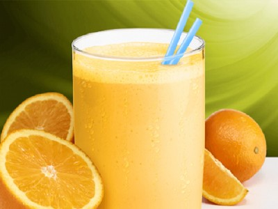

|  |
Smoothie name: Orange smoothie - Yogurt▸ Ingredients:
▸ Time to prepare: 15 minutes ▸ Approx quantity: 1 medium-size cup |
▸ How to make Orange - Yogurt smoothie:
- Orange peeled, removed seeds, get meat.
- Then put the orange juice, orange meat, yogurt, small ice into the blender.
- When the mixture is smooth, pour into a glass and drink.
- If you want to sweeten or increase the sweetness of the drink, you can add sugar or add a little milk.
▸ Calories and related information: